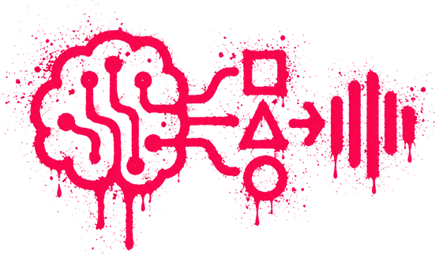
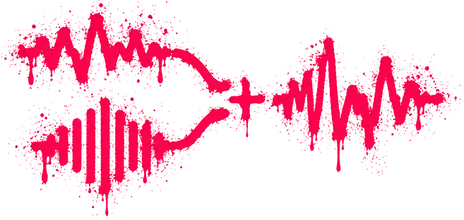
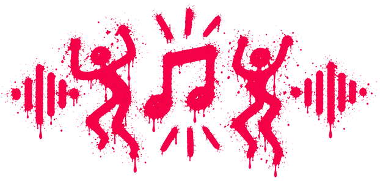

COMO YA VISTE...
La inteligencia artificial puede
Aprender patrones

Acá va la imagen 1imagenes/ia-patrones.png
Combinar sonidos

Acá va la imagen 2imagenes/ia-sonidos.png
Crear canciones para bailar

Acá va la imagen 3imagenes/ia-canciones.png
¡Presioná el botón
 en tu teclado para continuar!
en tu teclado para continuar!
COMO YA VISTE...
La cumbia también está hecha de…
Barrios

Vivencias

Identidad

¡Presioná el botón
en tu teclado para continuar!

¿VOS QUE PENSÁS?
¿Puede una máquina generar el sonido sin haber vivido la historia que lo construyó?
VOLVER A INICIAR